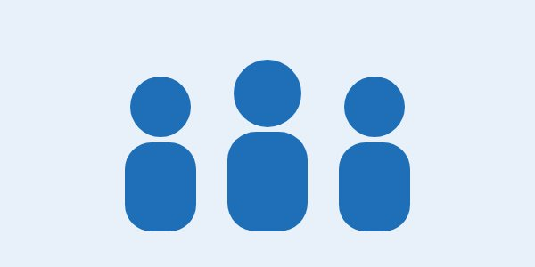

Missão
Promover inclusão social por meio da educação, da alimentação e do fortalecimento de vínculos comunitários.
ONG Mãos que Ajudam
A ONG Mãos que Ajudam é uma organização sem fins lucrativos que atua em bairros de baixa renda, oferecendo apoio educacional, distribuição de alimentos e atividades de convivência para crianças, jovens e famílias.

Promover inclusão social por meio da educação, da alimentação e do fortalecimento de vínculos comunitários.
Ser referência regional em projetos sociais transparentes e construídos junto com a comunidade.
Você pode doar, divulgar nosso trabalho ou se tornar voluntário. Conheça nossos projetos sociais ou faça seu cadastro para participar.